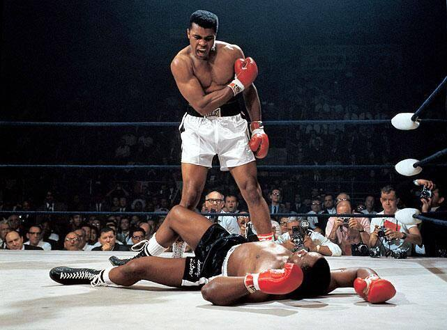
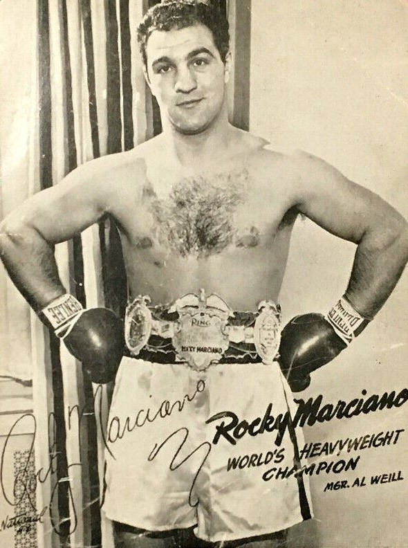
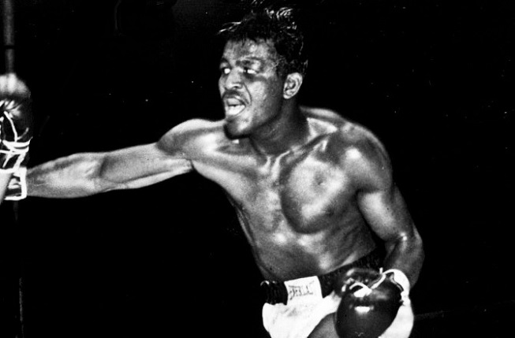
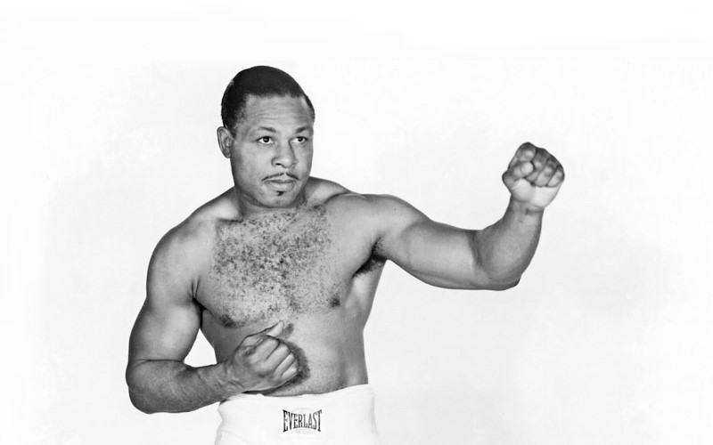
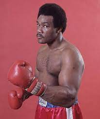
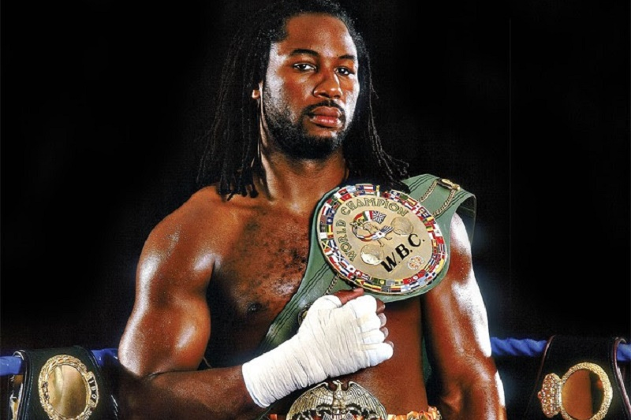
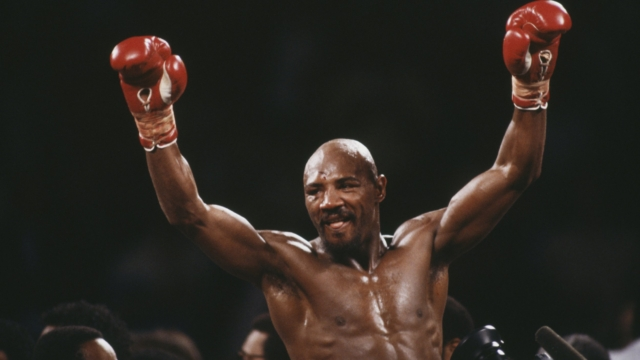
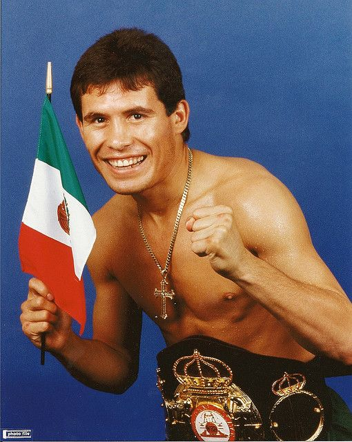
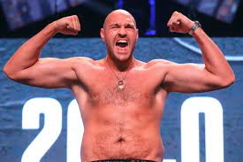

Top 1 - MUHAMMAD ALI

Muhammad Ali é considerado por muitos o maior boxeador da história. ele foi conhecido pelo seu jogo de pernas tão único que parecia uma dança, sua velocidade, que era extremamente alta para seu peso e sua personalidade, tendo sido um dos poucos à se opor publicamente a guerra do vietnam.
Top 2 - ROCKY MARCIANO

Rocky Marciano foi um lutador extraordinário, venceu todas as 50 lutas que participou, foi um dos únicos Peso-pesado à encerrar a carreira invicto e chamava muita atenção pela sua grande resistência, espírito de luta inabalável e seus potentes golpes nocauteadores.
Top 3 - SUGAR RAY ROBINSON

Na opinião de muitos o melhor da história, Sugar Ray Robinson foi um dos primeiros lutadores a estruturar uma defesa, graças à ela pode fazer (insira card), a base de sua grande defesa era seu footwork, seu jogo de pernas confundia todos e o permitia controlar a distância tanto para defesa quanto para ataque.Top 4 - ARCHIE MOORE

Archie Moore é um clássico e tem um card de vitórias impressionante (inserir card). Era um lutador de espírito de luta imbatível e colocava extrema potencia nos golpes com seu balanço, seu cruzado foi temido por todos os lutadores de sua geração.Top 5 - THOMAS HITMAN HEARNS
Thomas "The Hitman" Hearns é sem dúvidas o boxeador favorito do autor deste texto. Com 1,87m de altura e 2,04m de envergadura, Hearns foi o lutador que mais dominou a mão esquerda, sabendo utilizá-la com extrema velocidade e inteligencia. Ele usava jabs tão bem que os adversários esqueciam sua mão forte e por diversas lutas, ele finalizava com um poderoso direto nocauteador.Top 6 - GEORGE FOREMAN

Foreman talvez seja o lutador mais único desta lista, foi campeão quando jovem e depois dos 40 anos voltou da aposentadoria e foi novamente campeão. A fase jovem de foreman foi marcada pelo seu excelente físico e sua resistência e poder de nocaute extraordinários, já sua fase pós aposentadoria (que muitos discutem afirmando ser sua melhor fase), foi marcada por um jogo defensivo muito completo que era o melhor de sua época e pelo seu poder de nocaute que voltou ainda mais brutal.
Top 7 - LENNOX LEWIS

Lewis é o lutador mais subestimado da história do boxe, pouco se ouve falar em seu nome, mas ele derrotou todos os grandes nomes da sua geração, esmagou Mike Tyson, e unificou todos os cinturões da sua categoria, Lennox era um peso-pesado muito técnico, com boa defesa, um excelente fisico e golpes devastadores.Top 8 - MARVIN HAGLER

"The Marvelous" Hagler foi o grande nome da sua geração, venceu diversos lutadores do hall da fama, possuia um estilo único de extrema agressividade onde obrigava o adversário à aderir a um dura trocação."Top 9 - JULIO CESAR CHAVEZ

Chavez é um dos motivos do México ser tão famoso pelo boxe, um lutador de estilo mexicano genuíno, não recuava nunca, possuia uma técnica impecável e seu espírito de luta intimidava os mais valentes adversários.Top 10 - TYSON FURY

Tyson Fury é o único boxeador atual que está nessa lista. O boxeador quebra diversos preceitos do boxe, com uma barriga avantajada, venceu várias lendas do boxe com físicos perfeitos. Apesar de estar sempre fora de forma, Fury é extremamente rápido e possui uma resistência enorme, possui um jogo defensivo que combina técnicas de Foreman e Muhammad Ali, é extremamente inteligência e estrategista no combate e possui o maior espírito de luta de toda geração